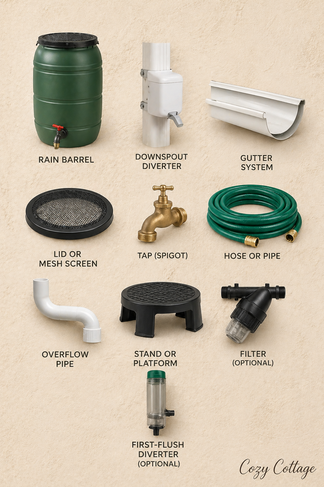

Disclaimer: As an Amazon Associate, I earn from qualifying purchases.
Even if a household already has a well or other source of water, rainwater harvesting can still be very beneficial. Collected rainwater can be used to maintain outdoor aquariums, provide a natural water source for visiting birds, and support healthy garden growth. It also serves practical purposes like flushing toilets, helping reduce the use of groundwater and making overall water usage more sustainable.
Rain Barrel Garden Irrigation
Rain barrel garden irrigation is an eco-friendly method of collecting and using rainwater for watering plants. Instead of letting rainwater run off roofs and go to waste, it is stored in barrels and later used in gardens. This simple system supports sustainable living and helps conserve valuable water resources.
What is a Rain Barrel System?
A rain barrel is a container placed under a downspout to collect rainwater from rooftops. The stored water can then be accessed through a tap or hose attached to the barrel. This system is easy to install and is commonly used in homes with gardens or small farms.
Benefits of Rain Barrel Irrigation
1. Water Conservation: Rainwater harvesting reduces dependence on municipal water supplies. It ensures that natural rainfall is used efficiently rather than wasted.
2. Cost Savings: Using stored rainwater lowers water bills, especially in households that require large amounts of water for gardening.
3. Healthier Plants: Rainwater is free from chemicals like chlorine found in treated water. This makes it more suitable for plants, promoting better growth.
4. Reduces Soil Erosion: Collecting rainwater prevents excessive runoff, which can erode soil and damage garden beds.
5. Environmentally Friendly: It reduces pressure on water treatment systems and promotes sustainable water management.
How Rain Barrel Irrigation Works
1. Rainwater falls on the roof.
2. It flows through gutters into a downspout.
3. The downspout directs water into the rain barrel.
4. Water is stored and later used through a tap or hose for irrigation.
Uses in Gardening
Watering flowers, vegetables, and lawns
Replenishing aquariums and pets' water tanks.
Supporting drip irrigation systems.
Cleaning garden tools.
Maintaining small kitchen gardens.
Maintenance Tips
Always keep the barrel covered to prevent mosquitoes.
Clean the barrel regularly.
Install a filter to remove debris.
Empty before heavy storms to avoid overflow.
Materials Needed for a Rain Barrel Garden Irrigation System
Setting up a rain barrel irrigation system is simple, but you need a few essential components to make it efficient and safe. Optional components like filters and first-flush diverters make the system cleaner and more efficient, but even a simple setup can work well for garden watering.

1. Rain Barrel (Storage Container)
The main component is a sturdy container to collect and store rainwater. It is usually plastic or metal with a capacity of 100–250 liters or more depending on need. It should be durable and non-toxic.
RGT Stores — Blue 100L PVC Cylindrical Storage Drum
2. Downspout Diverter
This connects your roof's drainage pipe to the barrel. It prevents overflow by sending excess water back to the drain. The kit includes a diverter, hose, screws, pipe cover and clamp.
Rain Water Collection System — Rain Collector for Downspouts
3. Gutter System
Your roof gutters collect rainwater and channel it toward the downspout. It must be clean and properly aligned to help maximize water collection.
ATORSE® Rain Water Collection System — Yard Gutter Drain with Hose
4. Lid or Mesh Screen
A tight-fitting lid or fine mesh keeps out leaves and debris and prevents mosquitoes from breeding.
5. Tap (Spigot)
Installed near the bottom of the barrel, allowing easy access to stored water. You can fill buckets or connect hoses to it easily.
6. Hose or Pipe
Used to carry water from the barrel to your garden. Can be a simple garden hose or connected to a drip irrigation system.
7. Overflow Pipe
Prevents water from spilling over the top. Redirects excess water away from the house and helps avoid flooding around the foundation.
8. Stand or Platform
Elevates the barrel slightly above ground level to improve water pressure and makes it easier to fill watering cans.
9. Filter (Optional but Recommended)
Placed at the inlet of the barrel to remove dirt, leaves, and debris — improves water quality.
NeeRain Ultra Rooftop Rainwater Harvesting Filter
WaterLabs WL0625 Water Tank Filter
IONIX "Economical Series" Whole House Water Filter
10. First-Flush Diverter (Optional)
This device removes the first flow of rainwater, discarding dirt and contaminants from the roof and keeping stored water cleaner.